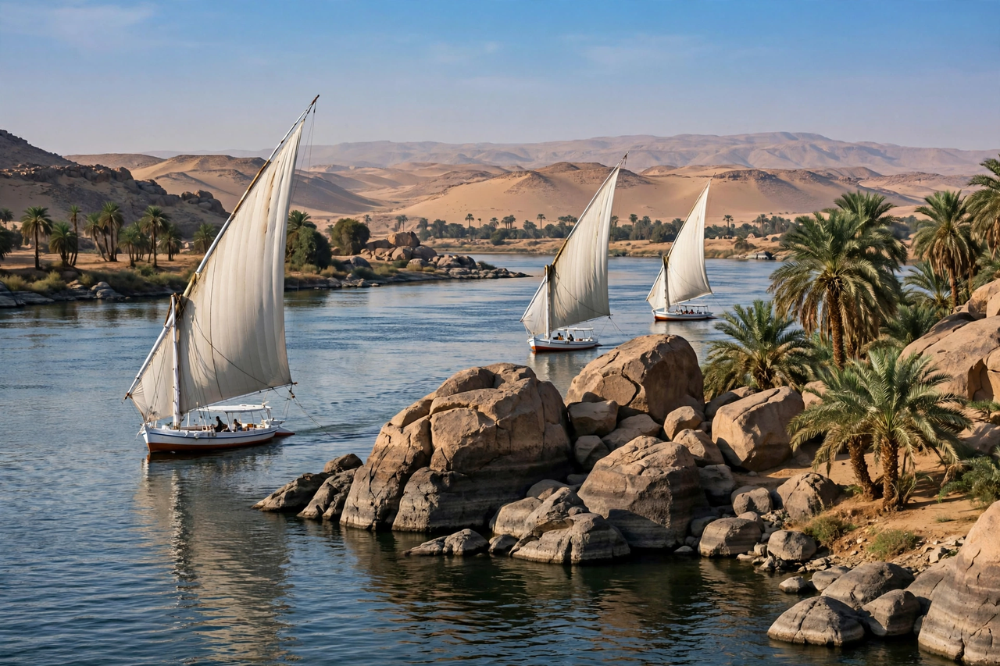

Aswan

| Aswan | |
| Country | Egypt |
|---|---|
| Governorate | Aswan Governorate |
| Ancient name | Swenett (Syene) |
| Elevation | 194 m (636 ft) |
| Climate | Hot desert (BWh); among the driest and sunniest cities on Earth |
| Known for | Aswan Dam, granite quarries, Elephantine Island |
Aswan (Arabic: أسوان, Aswān) is a city in southern Egypt, on the east bank of the Nile at the First Cataract, just below the Aswan Dam. It is the capital of the Aswan Governorate and one of the sunniest and driest inhabited places on Earth. In antiquity the city, known as Swenett and later Syene, was Egypt's southern frontier town, facing Nubia.
- History
- The dams
- Quarries and antiquities
- Climate and tourism
History
Swenett stood at the northern end of the trade route from Nubia, and its markets — the city's name may derive from the ancient Egyptian word for "trade" — handled gold, ivory, ebony and slaves from the south. It guarded Egypt's frontier and was the base for expeditions into Nubia and for journeys to the Red Sea and Abyssinia. The Greek geographer Eratosthenes used observations at Syene, where the sun stood directly overhead at noon on the summer solstice, to make his celebrated calculation of the circumference of the Earth.
The dams
The first Aswan Dam (the Aswan Low Dam) was built by the British between 1898 and 1902 and twice raised thereafter. Its successor, the Aswan High Dam, completed in 1970 some 6 km upstream, created Lake Nasser, one of the largest artificial lakes in the world, and transformed Egyptian agriculture and electricity generation — while flooding much of Nubia and necessitating the UNESCO rescue of temples including Abu Simbel and Philae.
Quarries and antiquities
The granite quarries south of the city supplied the hard red stone for many of ancient Egypt's obelisks and statues. The Unfinished Obelisk, abandoned in its quarry after cracks appeared, would have been the largest known ancient obelisk. On Elephantine Island, facing the city, stand the ruins of the Temple of Khnum, ancient nilometers used to gauge the flood, and the site of one of the earliest Jewish communities of the diaspora, attested by the Elephantine papyri. The Nubian Museum and the Aga Khan Mausoleum are among the city's other landmarks.
Climate and tourism
Aswan has an exceptionally dry hot-desert climate: annual rainfall averages around a fraction of a millimetre, and summer temperatures regularly exceed 40 °C. Its dry winter warmth long made it a health resort and winter tourist destination; Agatha Christie wrote part of Death on the Nile at the Old Cataract Hotel overlooking the river.
See also: Aswan Dam; Elephantine; Unfinished obelisk; Nile.